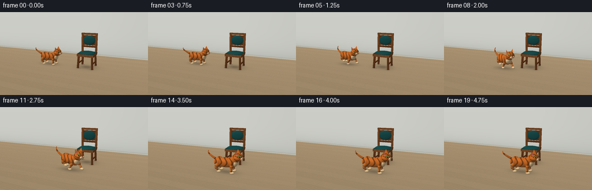
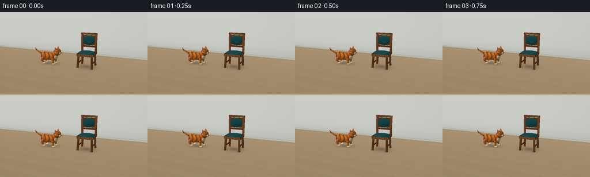
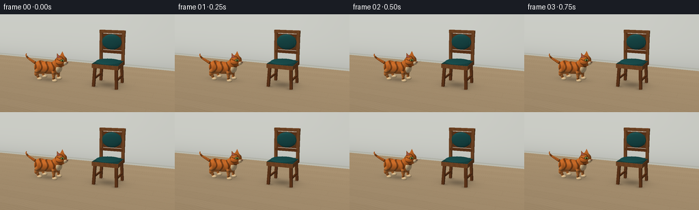
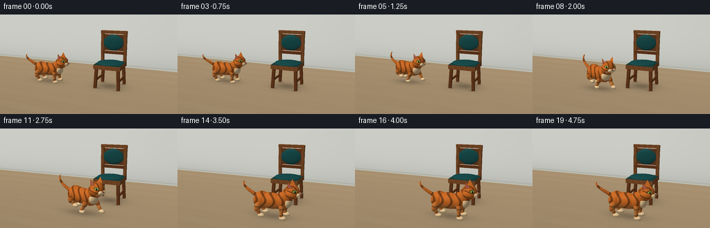

CODING AGENTS AS PIXEL WORLD MODELS
traex/GPT-6.1-Sol · dynamic_spatial_relationship_0006
点击播放 · 原生 RGB 像素
逐轮保存的候选
回放视频、检查图与代码变化。
每份候选均可单独播放。实际图片检查记录在下方工具轨迹中。
候选 01播放与检查图
点击播放 · 原生 RGB 像素


展开代码变化
--- 上一保存版本
+++ 本次保存版本
@@ -0,0 +1,297 @@
+"""Procedural RGB animation: analytic geometry and a small numpy ray renderer."""
+from pathlib import Path
+import math
+import numpy as np
+from PIL import Image
+from artifact_io import save
+
+W,H,SS=256,144,3
+RW,RH=W*SS,H*SS
+CAM=np.array([3.0,2.65,7.3])
+TARGET=np.array([0.0,0.78,0.0])
+FORWARD=(TARGET-CAM); FORWARD/=np.linalg.norm(FORWARD)
+RIGHT=np.cross(FORWARD,[0.,1.,0.]); RIGHT/=np.linalg.norm(RIGHT)
+UP=np.cross(RIGHT,FORWARD)
+FOCAL=250*SS
+xx,yy=np.meshgrid(np.arange(RW)+.5,np.arange(RH)+.5)
+RAYS=FORWARD+((xx-RW/2)/FOCAL)[...,None]*RIGHT+((RH/2-yy)/FOCAL)[...,None]*UP
+RAYS/=np.linalg.norm(RAYS,axis=-1)[...,None]
+LIGHT=np.array([-3.0,6.0,4.5]); LIGHT/=np.linalg.norm(LIGHT)
+
+
+def unit(a):
+ a=np.asarray(a,float);return a/np.linalg.norm(a)
+
+def basis_axis(a):
+ y=unit(a); other=np.array([0.,0.,1.]) if abs(y[2])<.85 else np.array([1.,0.,0.])
+ x=unit(np.cross(y,other)); z=np.cross(x,y)
+ return np.column_stack([x,y,z])
+
+class Renderer:
+ def __init__(self,catpos,heading):
+ self.cp=np.asarray(catpos); self.cb=heading
+ self.depth=np.full((RH,RW),1e5)
+ self.rgb=np.zeros((RH,RW,3),float)
+ self.background()
+ def bounds(self,c,r):
+ v=np.asarray(c)-CAM; z=v@FORWARD
+ if z<=r:return 0,RW,0,RH
+ px=RW/2+FOCAL*(v@RIGHT)/z; py=RH/2-FOCAL*(v@UP)/z
+ rr=FOCAL*r/(z-r)*1.1+2
+ return max(0,int(px-rr)),min(RW,int(px+rr)+1),max(0,int(py-rr)),min(RH,int(py+rr)+1)
+ def background(self):
+ d=RAYS
+ tf=-CAM[1]/d[...,1]
+ tw=(-3.1-CAM[2])/d[...,2]
+ floor=(tf>0)&((tf<tw)|(tw<0))
+ t=np.where(floor,tf,tw)
+ p=CAM+t[...,None]*d
+ fx,fz=p[...,0],p[...,2]
+ # Quiet, bleached oak boards, with subdued grain and seams.
+ grain=np.sin(fz*63+np.sin(fx*3.8)*3)*.007+np.sin(fz*131+fx*4)*.003
+ row=np.floor(fz/.43)
+ tone=.021*np.sin(row*3.1)+grain
+ seams=(np.mod(fz,.43)<.009)
+ joints=np.mod(fx+row*.78,2.3)<.008
+ floorc=np.stack([.68+tone,.585+tone,.453+tone],-1)
+ floorc-=((seams*.042+joints*.024))[...,None]
+ floorc*= (.9+.10*np.clip((3-fz)/8,0,1))[...,None]
+ shade=np.zeros((RH,RW))
+ # Grounded soft contact shadows under the chair and moving cat.
+ for sx,sz,ax,az,amp in [(.7,-.23,.7,.55,.15),(.7,-.23,.48,.36,.13),(self.cp[0],self.cp[2],.65,.33,.23)]:
+ shade+=amp*np.exp(-(((fx-sx)/ax)**2+((fz-sz)/az)**2)*1.6)
+ for lx in [.33,1.07]:
+ for lz in [-.60,.12]:
+ shade+=.16*np.exp(-(((fx-lx)/.15)**2+((fz-lz)/.12)**2)*1.6)
+ floorc*=np.clip(1-shade,.42,1)[...,None]
+ wallshade=.97-.05*np.clip(p[...,0]/8,0,1)-.09*np.exp(-np.maximum(p[...,1],0)/.5)
+ wall=np.array([.82,.827,.80])*wallshade[...,None]
+ # A simple plaster wall and low white baseboard.
+ board=p[...,1]<.115
+ wall=np.where(board[...,None],np.array([.75,.754,.709])*(.95+.04*np.sin(p[...,1]*50))[...,None],wall)
+ self.rgb=np.where(floor[...,None],floorc,wall)
+ self.depth=t
+ def shade(self,p,n,base,kind,meta):
+ diffuse=np.maximum(n@LIGHT,0)
+ illum=.50+.49*diffuse+.035*np.maximum(n@unit([2,2,-4]),0)
+ col=np.broadcast_to(np.array(base,float),p.shape).copy()
+ if kind=='fur':
+ q=(p-self.cp)@self.cb
+ noise=(np.sin(q[...,0]*192+q[...,2]*73)*np.sin(q[...,1]*174+q[...,2]*68))
+ typ=meta.get('part','body')
+ if typ=='tail':
+ phase=meta['phase']+((p-meta['center'])@meta['axis'])*27
+ pat=np.cos(phase)>.54
+ elif typ=='head':
+ pat=(np.cos(q[...,2]*42+q[...,1]*9)>.79)&(q[...,1]>.83)
+ pat|=(np.cos(q[...,1]*44+q[...,0]*12)>.82)&(np.abs(q[...,2])>.155)
+ elif typ=='leg':
+ pat=(np.cos(q[...,1]*36+q[...,2]*4)>.68)
+ else:
+ phase=q[...,0]*24+2.5*np.sin(q[...,1]*9)+np.cos(q[...,2]*9)*1.3
+ pat=(np.cos(phase)>.61)&(q[...,1]>.30)
+ col*=np.where(pat,.61,1)[...,None]
+ col*= (1+noise*.042)[...,None]
+ # Lighter belly and amber lit coat.
+ belly=np.clip((.45-q[...,1])*2.5,0,.24)
+ col=col*(1-belly[...,None])+np.array([.88,.69,.44])*belly[...,None]
+ elif kind=='wood':
+ grain=.035*np.sin(p[...,1]*16+p[...,0]*34+np.sin(p[...,2]*22)*2)+.012*np.sin(p[...,1]*112+p[...,2]*61)
+ col*=1+grain[...,None]
+ elif kind=='fabric':
+ tex=np.sin(p[...,0]*340)*np.sin(p[...,1]*310+p[...,2]*290)
+ col*=1+.019*tex[...,None]
+ elif kind=='pink':
+ illum=.7+.3*diffuse
+ view=CAM-p;view/=np.linalg.norm(view,axis=-1)[...,None]
+ halfway=view+LIGHT;halfway/=np.linalg.norm(halfway,axis=-1)[...,None]
+ spec=np.maximum(np.sum(n*halfway,axis=-1),0)**(55 if kind=='eye' else 36)
+ strength=.30 if kind=='eye' else (.06 if kind in ('wood','nose') else .025)
+ return np.clip(col*illum[...,None]+strength*spec[...,None],0,1)
+ def ellipsoid(self,c,r,base,axes=None,kind='',**meta):
+ c=np.array(c,float);r=np.array(r,float); axes=np.eye(3) if axes is None else axes
+ x0,x1,y0,y1=self.bounds(c,max(r))
+ if x0>=x1 or y0>=y1:return
+ d=RAYS[y0:y1,x0:x1]; o=(CAM-c)@axes/r; v=(d@axes)/r
+ a=np.sum(v*v,axis=-1); b=np.sum(v*o,axis=-1); cc=np.sum(o*o)-1
+ disc=b*b-a*cc; t=(-b-np.sqrt(np.maximum(disc,0)))/a
+ dep=self.depth[y0:y1,x0:x1]; hit=(disc>=0)&(t>0)&(t<dep)
+ if not np.any(hit):return
+ p=CAM+d[hit]*t[hit,None]
+ nn=((p-c)@axes/(r*r))@axes.T; nn/=np.linalg.norm(nn,axis=-1)[:,None]
+ color=self.shade(p,nn,base,kind,meta)
+ self.rgb[y0:y1,x0:x1][hit]=color;dep[hit]=t[hit]
+ def box(self,c,r,base,axes=None,kind='wood'):
+ c=np.array(c,float);r=np.array(r,float); axes=np.eye(3) if axes is None else axes
+ x0,x1,y0,y1=self.bounds(c,np.linalg.norm(r))
+ if x0>=x1 or y0>=y1:return
+ d=RAYS[y0:y1,x0:x1];o=(CAM-c)@axes;v=d@axes
+ safe=np.where(abs(v)<1e-9,1e-9,v)
+ t0=(-r-o)/safe;t1=(r-o)/safe
+ lower=np.minimum(t0,t1);upper=np.maximum(t0,t1)
+ near=np.max(lower,axis=-1);far=np.min(upper,axis=-1)
+ dep=self.depth[y0:y1,x0:x1];hit=(near>0)&(near<far)&(near<dep)
+ if not np.any(hit):return
+ p=CAM+d[hit]*near[hit,None]; local=(p-c)@axes/r
+ idx=np.argmax(abs(local),axis=-1);norm=np.zeros(local.shape);norm[np.arange(len(norm)),idx]=np.sign(local[np.arange(len(norm)),idx]); norm=norm@axes.T
+ self.rgb[y0:y1,x0:x1][hit]=self.shade(p,norm,base,kind,{})
+ dep[hit]=near[hit]
+ def triangle(self,a,b,c,base,kind=''):
+ a,b,c=map(lambda x:np.array(x,float),(a,b,c))
+ center=(a+b+c)/3;rad=max(np.linalg.norm(a-center),np.linalg.norm(b-center),np.linalg.norm(c-center))
+ x0,x1,y0,y1=self.bounds(center,rad)
+ if x0>=x1 or y0>=y1:return
+ d=RAYS[y0:y1,x0:x1];e1=b-a;e2=c-a
+ hv=np.cross(d,e2);det=hv@e1; inv=1/np.where(abs(det)<1e-9,1e-9,det)
+ s=CAM-a;u=(hv@s)*inv;q=np.cross(s,e1);v=(d@q)*inv;t=(e2@q)*inv
+ dep=self.depth[y0:y1,x0:x1]; hit=(abs(det)>1e-9)&(u>=0)&(v>=0)&(u+v<=1)&(t>0)&(t<dep)
+ if not np.any(hit):return
+ n=unit(np.cross(e1,e2));n=n if n@(CAM-center)>0 else -n
+ p=CAM+d[hit]*t[hit,None];ns=np.broadcast_to(n,p.shape)
+ self.rgb[y0:y1,x0:x1][hit]=self.shade(p,ns,base,kind,{})
+ dep[hit]=t[hit]
+ def limb(self,a,b,r,base,kind='',**meta):
+ a=np.asarray(a);b=np.asarray(b);c=(a+b)/2;axes=basis_axis(b-a)
+ self.ellipsoid(c,[r,np.linalg.norm(b-a)/2+r,r],base,axes,kind,**meta)
+
+OAK=[.43,.24,.115]
+OAKLIGHT=[.53,.32,.165]
+TEAL=[.105,.32,.32]
+GINGER=[.83,.435,.155]
+CREAM=[.94,.81,.61]
+
+def chair(r):
+ cx=.72; bz=-.55
+ # Four splayed hardwood legs.
+ for sx in [-1,1]:
+ for sz in [-1,1]:
+ top=np.array([cx+sx*.365,.805,-.18+sz*.35])
+ bot=np.array([cx+sx*.405,.035,-.18+sz*.39])
+ r.box((top+bot)/2,[.047,np.linalg.norm(top-bot)/2,.047],OAK,basis_axis(top-bot))
+ # Seat rails and softly upholstered seat cushion.
+ r.box([cx,.77,-.18],[.455,.068,.445],OAKLIGHT)
+ r.box([cx,.835,-.18],[.442,.018,.427],[.12,.28,.27],kind='fabric')
+ r.ellipsoid([cx,.856,-.18],[.448,.066,.427],TEAL,kind='fabric')
+ # Back stiles and joinery leave an unmistakable chair silhouette.
+ for dx in [-.405,.405]:
+ r.box([cx+dx,1.315,bz],[.049,.555,.054],OAKLIGHT)
+ r.box([cx,1.858,bz],[.458,.052,.06],OAKLIGHT)
+ r.box([cx,1.145,bz],[.408,.043,.055],OAK)
+ r.box([cx,1.50,bz+.004],[.356,.278,.038],OAK)
+ r.ellipsoid([cx,1.505,bz+.055],[.353,.269,.067],TEAL,kind='fabric')
+ # Subtle welt edging on the back pad.
+ for x in [-.318,.318]:
+ r.limb([cx+x,1.29,bz+.085],[cx+x,1.718,bz+.085],.008,[.13,.365,.35],'fabric')
+ # Horizontal support stretchers, visible in the open under-seat space.
+ for x in [-.39,.39]:
+ r.box([cx+x,.31,-.18],[.027,.027,.37],OAK)
+
+
+def cat(renderer,center,angle,time,moving,progress):
+ # Local x is noseward; local z is the cat's left side.
+ co,si=np.cos(angle),np.sin(angle)
+ B=np.array([[co,0,-si],[0,1,0],[si,0,co]])
+ renderer.cp=np.array(center); renderer.cb=B
+ c=np.array(center)
+ pace=2*np.pi*(time*1.35)
+ bounce=.037*(1-np.cos(2*pace))*moving
+ def P(q):return c+B@np.array(q)+np.array([0,bounce,0])
+ def E(q,r,color=GINGER,kind='fur',axes=None,**meta):renderer.ellipsoid(P(q),r,color,B if axes is None else B@axes,kind,**meta)
+ def L(a,b,rad,color=GINGER,kind='fur',**meta):renderer.limb(P(a),P(b),rad,color,kind,**meta)
+ # Tail is a tapering curved appendage, not a static stick.
+ sway=.10*np.sin(time*3.1)
+ points=[]
+ for j in range(14):
+ t=j/13
+ x=-.46-.47*np.sin(t*1.65)
+ y=.58+.53*t-.16*t*t + .08*moving*np.sin(pace+t*2)
+ z=.04+sway*t+.075*np.sin(t*np.pi)
+ points.append([x,y,z])
+ for j in range(13):
+ a,b=np.array(points[j]),np.array(points[j+1]);pa,pb=P(a),P(b)
+ mid=(pa+pb)/2; axis=unit(pb-pa)
+ renderer.limb(pa,pb,.057*(1-j/17),GINGER,'fur',part='tail',phase=j*.9,center=mid,axis=axis)
+ # Four articulated legs, with a running gait and individually planted paws.
+ for side in [-1,1]:
+ for front in [False,True]:
+ hipx=.32 if front else -.33
+ phase=pace+(0 if front else np.pi*.78)+(0 if side==1 else np.pi)
+ swing=.23*np.sin(phase)*moving
+ lift=.15*max(0,np.cos(phase))*moving
+ hip=np.array([hipx,.43,side*.153])
+ knee=np.array([hipx+swing*.48+(.01 if front else -.085),.245+lift*.4,side*.174])
+ ankle=np.array([hipx+swing,.075+lift,side*.177])
+ L(hip,knee,.075 if front else .105,part='leg')
+ L(knee,ankle,.052,part='leg')
+ E(ankle+[.047,-.022,0],[.106,.060,.068],CREAM,'')
+ # Toe divisions, softly shaded rather than outlined.
+ for off in [-.024,.022]:
+ L(ankle+[.102,-.002,off],ankle+[.116,-.021,off],.005,[.61,.43,.28],'')
+ E([-.035,.47,0],[.49,.235,.232],part='body')
+ E([-.33,.46,0],[.255,.26,.237],part='body')
+ E([.31,.50,0],[.225,.263,.225],part='body')
+ E([.42,.635,0],[.166,.242,.176],part='body')
+ E([.455,.49,.023],[.125,.163,.167],CREAM,'')
+ # Rounded, recognizable feline head with pointed ears and cheek ruffs.
+ h=.015*np.sin(time*2.1)*(1-moving)
+ E([.565,.782+h,0],[.212,.211,.192],part='head')
+ for side in [-1,1]:
+ E([.572,.745+h,side*.114],[.163,.124,.116],part='head')
+ # Closed tetrahedral ear: shaded outer fur and inset salmon inner ear.
+ a=[.469,.895+h,side*.161];b=[.644,.912+h,side*.132];tip=[.512,1.10+h,side*.201];back=[.45,.898+h,side*.059]
+ for tri in [(a,b,tip),(a,back,tip),(b,back,tip),(a,b,back)]:
+ renderer.triangle(*[P(q) for q in tri],GINGER,'')
+ inner=[[.496,.925+h,side*.164],[.608,.936+h,side*.151],[.518,1.066+h,side*.194]]
+ renderer.triangle(*[P(q) for q in inner],[.77,.41,.365],'pink')
+ # Eyes mounted on the sloped front cheeks.
+ n=unit([.68,.11,side*.75]); vertical=unit([-.08,1,-.03*side]); hor=unit(np.cross(vertical,n));vertical=np.cross(n,hor)
+ eyeB=np.column_stack([hor,vertical,n])
+ loc=np.array([.674,.825+h,side*.132])
+ E(loc,[.084,.062,.026],[.275,.175,.075],'',axes=eyeB)
+ E(loc+n*.014,[.067,.048,.024],[.59,.68,.28],'eye',axes=eyeB)
+ E(loc+n*.036,[.017,.040,.006],[.045,.055,.027],'eye',axes=eyeB)
+ E(loc+n*.043+hor*.021+vertical*.021,[.012,.013,.005],[.97,.985,.90],'eye',axes=eyeB)
+ # Cream muzzle, paired cheeks and tiny freckles.
+ E([.736,.725+h,side*.058],[.080,.060,.073],CREAM,'')
+ for k in range(3):
+ E([.776-k*.018,.74+h-k*.016,side*(.103+k*.006)],[.004,.004,.004],[.32,.215,.13],'')
+ # Fine white whiskers, visible in front of the coat.
+ for k in range(3):
+ start=np.array([.77,.73+h-k*.016,side*.082])
+ middle=start+np.array([.055,.006+(k-1)*.027,side*.12])
+ end=middle+np.array([.005,(k-1)*.013,side*.09])
+ L(start,middle,.0042,[.925,.875,.73],'')
+ L(middle,end,.003,[.925,.875,.73],'')
+ E([.724,.679+h,0],[.076,.038,.079],CREAM,'')
+ E([.807,.751+h,0],[.019,.016,.025],[.56,.285,.255],'nose')
+ L([.803,.739+h,0],[.798,.716+h,0],.006,[.26,.16,.12],'')
+ for side in [-1,1]:
+ L([.798,.716+h,0],[.780,.704+h,side*.037],.005,[.30,.19,.135],'')
+
+
+def animation():
+ frames=[]
+ for i in range(20):
+ tm=i/4
+ # Rest on the left, accelerate into a run, then settle in front.
+ s=np.clip((i-3)/11,0,1)
+ u=s*s*(3-2*s)
+ x=-1.58+2.31*u
+ z=.03+1.27*(u*u*(3-2*u))
+ # The body points into the curving trajectory, then remains in profile.
+ angle=.0 if s==0 else .54*np.sin(np.pi*s)
+ moving=float(0<s<1)*np.clip(min(s*5,(1-s)*5),0,1)
+ c=[x,0,z]
+ B=np.array([[np.cos(angle),0,-np.sin(angle)],[0,1,0],[np.sin(angle),0,np.cos(angle)]])
+ render=Renderer(c,B)
+ chair(render)
+ cat(render,c,angle,tm,moving,u)
+ # Mild photographic exposure and edge antialiasing.
+ rgb=np.clip(render.rgb,0,1)
+ out=(rgb*255+.5).astype(np.uint8)
+ im=Image.fromarray(out).resize((W,H),Image.Resampling.LANCZOS)
+ frames.append(np.asarray(im))
+ print(f'frame {i:02d} rendered',flush=True)
+ save(np.stack(frames),Path(__file__).parent)
+
+if __name__=='__main__':animation()
候选 02播放与检查图
点击播放 · 原生 RGB 像素


展开代码变化
--- 上一保存版本 +++ 本次保存版本 @@ -12,7 +12,7 @@ FORWARD=(TARGET-CAM); FORWARD/=np.linalg.norm(FORWARD) RIGHT=np.cross(FORWARD,[0.,1.,0.]); RIGHT/=np.linalg.norm(RIGHT) UP=np.cross(RIGHT,FORWARD) -FOCAL=250*SS +FOCAL=340*SS xx,yy=np.meshgrid(np.arange(RW)+.5,np.arange(RH)+.5) RAYS=FORWARD+((xx-RW/2)/FOCAL)[...,None]*RIGHT+((RH/2-yy)/FOCAL)[...,None]*UP RAYS/=np.linalg.norm(RAYS,axis=-1)[...,None]
可观测工具轨迹
实际执行的命令与返回图片。
命令 1exit 0
/bin/bash -lc 'ls -la && cat prompt.txt && cat GENERATION_RULES.md && cat task_spec.json'
命令 2exit 0
/bin/bash -lc "cat artifact_io.py && python - <<'PY' import importlib.util for m in ['numpy','PIL','scipy']: print(m, bool(importlib.util.find_spec(m))) PY"
命令 3exit 0
/bin/bash -lc "cat > generate.py <<'PY'
\"\"\"Procedural RGB animation: analytic geometry and a small numpy ray renderer.\"\"\"
from pathlib import Path
import math
import numpy as np
from PIL import Image
from artifact_io import save
W,H,SS=256,144,3
RW,RH=W*SS,H*SS
CAM=np.array([3.0,2.65,7.3])
TARGET=np.array([0.0,0.78,0.0])
FORWARD=(TARGET-CAM); FORWARD/=np.linalg.norm(FORWARD)
RIGHT=np.cross(FORWARD,[0.,1.,0.]); RIGHT/=np.linalg.norm(RIGHT)
UP=np.cross(RIGHT,FORWARD)
FOCAL=250*SS
xx,yy=np.meshgrid(np.arange(RW)+.5,np.arange(RH)+.5)
RAYS=FORWARD+((xx-RW/2)/FOCAL)[...,None]*RIGHT+((RH/2-yy)/FOCAL)[...,None]*UP
RAYS/=np.linalg.norm(RAYS,axis=-1)[...,None]
LIGHT=np.array([-3.0,6.0,4.5]); LIGHT/=np.linalg.norm(LIGHT)
def unit(a):
a=np.asarray(a,float);return a/np.linalg.norm(a)
def basis_axis(a):
y=unit(a); other=np.array([0.,0.,1.]) if abs(y[2])<.85 else np.array([1.,0.,0.])
x=unit(np.cross(y,other)); z=np.cross(x,y)
return np.column_stack([x,y,z])
class Renderer:
def __init__(self,catpos,heading):
self.cp=np.asarray(catpos); self.cb=heading
self.depth=np.full((RH,RW),1e5)
self.rgb=np.zeros((RH,RW,3),float)
self.background()
def bounds(self,c,r):
v=np.asarray(c)-CAM; z=v@FORWARD
if z<=r:return 0,RW,0,RH
px=RW/2+FOCAL*(v@RIGHT)/z; py=RH/2-FOCAL*(v@UP)/z
rr=FOCAL*r/(z-r)*1.1+2
return max(0,int(px-rr)),min(RW,int(px+rr)+1),max(0,int(py-rr)),min(RH,int(py+rr)+1)
def background(self):
d=RAYS
tf=-CAM[1]/d[...,1]
tw=(-3.1-CAM[2])/d[...,2]
floor=(tf>0)&((tf<tw)|(tw<0))
t=np.where(floor,tf,tw)
p=CAM+t[...,None]*d
fx,fz=p[...,0],p[...,2]
# Quiet, bleached oak boards, with subdued grain and seams.
grain=np.sin(fz*63+np.sin(fx*3.8)*3)*.007+np.sin(fz*131+fx*4)*.003
row=np.floor(fz/.43)
tone=.021*np.sin(row*3.1)+grain
seams=(np.mod(fz,.43)<.009)
joints=np.mod(fx+row*.78,2.3)<.008
floorc=np.stack([.68+tone,.585+tone,.453+tone],-1)
floorc-=((seams*.042+joints*.024))[...,None]
floorc*= (.9+.10*np.clip((3-fz)/8,0,1))[...,None]
shade=np.zeros((RH,RW))
# Grounded soft contact shadows under the chair and moving cat.
for sx,sz,ax,az,amp in [(.7,-.23,.7,.55,.15),(.7,-.23,.48,.36,.13),(self.cp[0],self.cp[2],.65,.33,.23)]:
shade+=amp*np.exp(-(((fx-sx)/ax)**2+((fz-sz)/az)**2)*1.6)
for lx in [.33,1.07]:
for lz in [-.60,.12]:
shade+=.16*np.exp(-(((fx-lx)/.15)**2+((fz-lz)/.12)**2)*1.6)
floorc*=np.clip(1-shade,.42,1)[...,None]
wallshade=.97-.05*np.clip(p[...,0]/8,0,1)-.09*np.exp(-np.maximum(p[...,1],0)/.5)
wall=np.array([.82,.827,.80])*wallshade[...,None]
# A simple plaster wall and low white baseboard.
board=p[...,1]<.115
wall=np.where(board[...,None],np.array([.75,.754,.709])*(.95+.04*np.sin(p[...,1]*50))[...,None],wall)
self.rgb=np.where(floor[...,None],floorc,wall)
self.depth=t
def shade(self,p,n,base,kind,meta):
diffuse=np.maximum(n@LIGHT,0)
illum=.50+.49*diffuse+.035*np.maximum(n@unit([2,2,-4]),0)
col=np.broadcast_to(np.array(base,float),p.shape).copy()
if kind=='fur':
q=(p-self.cp)@self.cb
noise=(np.sin(q[...,0]*192+q[...,2]*73)*np.sin(q[...,1]*174+q[...,2]*68))
typ=meta.get('part','body')
if typ=='tail':
phase=meta['phase']+((p-meta['center'])@meta['axis'])*27
pat=np.cos(phase)>.54
elif typ=='head':
pat=(np.cos(q[...,2]*42+q[...,1]*9)>.79)&(q[...,1]>.83)
pat|=(np.cos(q[...,1]*44+q[...,0]*12)>.82)&(np.abs(q[...,2])>.155)
elif typ=='leg':
pat=(np.cos(q[...,1]*36+q[...,2]*4)>.68)
else:
phase=q[...,0]*24+2.5*np.sin(q[...,1]*9)+np.cos(q[...,2]*9)*1.3
pat=(np.cos(phase)>.61)&(q[...,1]>.30)
col*=np.where(pat,.61,1)[...,None]
col*= (1+noise*.042)[...,None]
# Lighter belly and amber lit coat.
belly=np.clip((.45-q[...,1])*2.5,0,.24)
col=col*(1-belly[...,None])+np.array([.88,.69,.44])*belly[...,None]
elif kind=='wood':
grain=.035*np.sin(p[...,1]*16+p[...,0]*34+np.sin(p[...,2]*22)*2)+.012*np.sin(p[...,1]*112+p[...,2]*61)
col*=1+grain[...,None]
elif kind=='fabric':
tex=np.sin(p[...,0]*340)*np.sin(p[...,1]*310+p[...,2]*290)
col*=1+.019*tex[...,None]
elif kind=='pink':
illum=.7+.3*diffuse
view=CAM-p;view/=np.linalg.norm(view,axis=-1)[...,None]
halfway=view+LIGHT;halfway/=np.linalg.norm(halfway,axis=-1)[...,None]
spec=np.maximum(np.sum(n*halfway,axis=-1),0)**(55 if kind=='eye' else 36)
strength=.30 if kind=='eye' else (.06 if kind in ('wood','nose') else .025)
return np.clip(col*illum[...,None]+strength*spec[...,None],0,1)
def ellipsoid(self,c,r,base,axes=None,kind='',**meta):
c=np.array(c,float);r=np.array(r,float); axes=np.eye(3) if axes is None else axes
x0,x1,y0,y1=self.bounds(c,max(r))
if x0>=x1 or y0>=y1:return
d=RAYS[y0:y1,x0:x1]; o=(CAM-c)@axes/r; v=(d@axes)/r
a=np.sum(v*v,axis=-1); b=np.sum(v*o,axis=-1); cc=np.sum(o*o)-1
disc=b*b-a*cc; t=(-b-np.sqrt(np.maximum(disc,0)))/a
dep=self.depth[y0:y1,x0:x1]; hit=(disc>=0)&(t>0)&(t<dep)
if not np.any(hit):return
p=CAM+d[hit]*t[hit,None]
nn=((p-c)@axes/(r*r))@axes.T; nn/=np.linalg.norm(nn,axis=-1)[:,None]
color=self.shade(p,nn,base,kind,meta)
self.rgb[y0:y1,x0:x1][hit]=color;dep[hit]=t[hit]
def box(self,c,r,base,axes=None,kind='wood'):
c=np.array(c,float);r=np.array(r,float); axes=np.eye(3) if axes is None else axes
x0,x1,y0,y1=self.bounds(c,np.linalg.norm(r))
if x0>=x1 or y0>=y1:return
d=RAYS[y0:y1,x0:x1];o=(CAM-c)@axes;v=d@axes
safe=np.where(abs(v)<1e-9,1e-9,v)
t0=(-r-o)/safe;t1=(r-o)/safe
lower=np.minimum(t0,t1);upper=np.maximum(t0,t1)
near=np.max(lower,axis=-1);far=np.min(upper,axis=-1)
dep=self.depth[y0:y1,x0:x1];hit=(near>0)&(near<far)&(near<dep)
if not np.any(hit):return
p=CAM+d[hit]*near[hit,None]; local=(p-c)@axes/r
idx=np.argmax(abs(local),axis=-1);norm=np.zeros(local.shape);norm[np.arange(len(norm)),idx]=np.sign(local[np.arange(len(norm)),idx]); norm=norm@axes.T
self.rgb[y0:y1,x0:x1][hit]=self.shade(p,norm,base,kind,{})
dep[hit]=near[hit]
def triangle(self,a,b,c,base,kind=''):
a,b,c=map(lambda x:np.array(x,float),(a,b,c))
center=(a+b+c)/3;rad=max(np.linalg.norm(a-center),np.linalg.norm(b-center),np.linalg.norm(c-center))
x0,x1,y0,y1=self.bounds(center,rad)
if x0>=x1 or y0>=y1:return
d=RAYS[y0:y1,x0:x1];e1=b-a;e2=c-a
hv=np.cross(d,e2);det=hv@e1; inv=1/np.where(abs(det)<1e-9,1e-9,det)
s=CAM-a;u=(hv@s)*inv;q=np.cross(s,e1);v=(d@q)*inv;t=(e2@q)*inv
dep=self.depth[y0:y1,x0:x1]; hit=(abs(det)>1e-9)&(u>=0)&(v>=0)&(u+v<=1)&(t>0)&(t<dep)
if not np.any(hit):return
n=unit(np.cross(e1,e2));n=n if n@(CAM-center)>0 else -n
p=CAM+d[hit]*t[hit,None];ns=np.broadcast_to(n,p.shape)
self.rgb[y0:y1,x0:x1][hit]=self.shade(p,ns,base,kind,{})
dep[hit]=t[hit]
def limb(self,a,b,r,base,kind='',**meta):
a=np.asarray(a);b=np.asarray(b);c=(a+b)/2;axes=basis_axis(b-a)
self.ellipsoid(c,[r,np.linalg.norm(b-a)/2+r,r],base,axes,kind,**meta)
OAK=[.43,.24,.115]
OAKLIGHT=[.53,.32,.165]
TEAL=[.105,.32,.32]
GINGER=[.83,.435,.155]
CREAM=[.94,.81,.61]
def chair(r):
cx=.72; bz=-.55
# Four splayed hardwood legs.
for sx in [-1,1]:
for sz in [-1,1]:
top=np.array([cx+sx*.365,.805,-.18+sz*.35])
bot=np.array([cx+sx*.405,.035,-.18+sz*.39])
r.box((top+bot)/2,[.047,np.linalg.norm(top-bot)/2,.047],OAK,basis_axis(top-bot))
# Seat rails and softly upholstered seat cushion.
r.box([cx,.77,-.18],[.455,.068,.445],OAKLIGHT)
r.box([cx,.835,-.18],[.442,.018,.427],[.12,.28,.27],kind='fabric')
r.ellipsoid([cx,.856,-.18],[.448,.066,.427],TEAL,kind='fabric')
# Back stiles and joinery leave an unmistakable chair silhouette.
for dx in [-.405,.405]:
r.box([cx+dx,1.315,bz],[.049,.555,.054],OAKLIGHT)
r.box([cx,1.858,bz],[.458,.052,.06],OAKLIGHT)
r.box([cx,1.145,bz],[.408,.043,.055],OAK)
r.box([cx,1.50,bz+.004],[.356,.278,.038],OAK)
r.ellipsoid([cx,1.505,bz+.055],[.353,.269,.067],TEAL,kind='fabric')
# Subtle welt edging on the back pad.
for x in [-.318,.318]:
r.limb([cx+x,1.29,bz+.085],[cx+x,1.718,bz+.085],.008,[.13,.365,.35],'fabric')
# Horizontal support stretchers, visible in the open under-seat space.
for x in [-.39,.39]:
r.box([cx+x,.31,-.18],[.027,.027,.37],OAK)
def cat(renderer,center,angle,time,moving,progress):
# Local x is noseward; local z is the cat's left side.
co,si=np.cos(angle),np.sin(angle)
B=np.array([[co,0,-si],[0,1,0],[si,0,co]])
renderer.cp=np.array(center); renderer.cb=B
c=np.array(center)
pace=2*np.pi*(time*1.35)
bounce=.037*(1-np.cos(2*pace))*moving
def P(q):return c+B@np.array(q)+np.array([0,bounce,0])
def E(q,r,color=GINGER,kind='fur',axes=None,**meta):renderer.ellipsoid(P(q),r,color,B if axes is None else B@axes,kind,**meta)
def L(a,b,rad,color=GINGER,kind='fur',**meta):renderer.limb(P(a),P(b),rad,color,kind,**meta)
# Tail is a tapering curved appendage, not a static stick.
sway=.10*np.sin(time*3.1)
points=[]
for j in range(14):
t=j/13
x=-.46-.47*np.sin(t*1.65)
y=.58+.53*t-.16*t*t + .08*moving*np.sin(pace+t*2)
z=.04+sway*t+.075*np.sin(t*np.pi)
points.append([x,y,z])
for j in range(13):
a,b=np.array(points[j]),np.array(points[j+1]);pa,pb=P(a),P(b)
mid=(pa+pb)/2; axis=unit(pb-pa)
renderer.limb(pa,pb,.057*(1-j/17),GINGER,'fur',part='tail',phase=j*.9,center=mid,axis=axis)
# Four articulated legs, with a running gait and individually planted paws.
for side in [-1,1]:
for front in [False,True]:
hipx=.32 if front else -.33
phase=pace+(0 if front else np.pi*.78)+(0 if side==1 else np.pi)
swing=.23*np.sin(phase)*moving
lift=.15*max(0,np.cos(phase))*moving
hip=np.array([hipx,.43,side*.153])
knee=np.array([hipx+swing*.48+(.01 if front else -.085),.245+lift*.4,side*.174])
ankle=np.array([hipx+swing,.075+lift,side*.177])
L(hip,knee,.075 if front else .105,part='leg')
L(knee,ankle,.052,part='leg')
E(ankle+[.047,-.022,0],[.106,.060,.068],CREAM,'')
# Toe divisions, softly shaded rather than outlined.
for off in [-.024,.022]:
L(ankle+[.102,-.002,off],ankle+[.116,-.021,off],.005,[.61,.43,.28],'')
E([-.035,.47,0],[.49,.235,.232],part='body')
E([-.33,.46,0],[.255,.26,.237],part='body')
E([.31,.50,0],[.225,.263,.225],part='body')
E([.42,.635,0],[.166,.242,.176],part='body')
E([.455,.49,.023],[.125,.163,.167],CREAM,'')
# Rounded, recognizable feline head with pointed ears and cheek ruffs.
h=.015*np.sin(time*2.1)*(1-moving)
E([.565,.782+h,0],[.212,.211,.192],part='head')
for side in [-1,1]:
E([.572,.745+h,side*.114],[.163,.124,.116],part='head')
# Closed tetrahedral ear: shaded outer fur and inset salmon inner ear.
a=[.469,.895+h,side*.161];b=[.644,.912+h,side*.132];tip=[.512,1.10+h,side*.201];back=[.45,.898+h,side*.059]
for tri in [(a,b,tip),(a,back,tip),(b,back,tip),(a,b,back)]:
renderer.triangle(*[P(q) for q in tri],GINGER,'')
inner=[[.496,.925+h,side*.164],[.608,.936+h,side*.151],[.518,1.066+h,side*.194]]
renderer.triangle(*[P(q) for q in inner],[.77,.41,.365],'pink')
# Eyes mounted on the sloped front cheeks.
n=unit([.68,.11,side*.75]); vertical=unit([-.08,1,-.03*side]); hor=unit(np.cross(vertical,n));vertical=np.cross(n,hor)
eyeB=np.column_stack([hor,vertical,n])
loc=np.array([.674,.825+h,side*.132])
E(loc,[.084,.062,.026],[.275,.175,.075],'',axes=eyeB)
E(loc+n*.014,[.067,.048,.024],[.59,.68,.28],'eye',axes=eyeB)
E(loc+n*.036,[.017,.040,.006],[.045,.055,.027],'eye',axes=eyeB)
E(loc+n*.043+hor*.021+vertical*.021,[.012,.013,.005],[.97,.985,.90],'eye',axes=eyeB)
# Cream muzzle, paired cheeks and tiny freckles.
E([.736,.725+h,side*.058],[.080,.060,.073],CREAM,'')
for k in range(3):
E([.776-k*.018,.74+h-k*.016,side*(.103+k*.006)],[.004,.004,.004],[.32,.215,.13],'')
# Fine white whiskers, visible in front of the coat.
for k in range(3):
start=np.array([.77,.73+h-k*.016,side*.082])
middle=start+np.array([.055,.006+(k-1)*.027,side*.12])
end=middle+np.array([.005,(k-1)*.013,side*.09])
L(start,middle,.0042,[.925,.875,.73],'')
L(middle,end,.003,[.925,.875,.73],'')
E([.724,.679+h,0],[.076,.038,.079],CREAM,'')
E([.807,.751+h,0],[.019,.016,.025],[.56,.285,.255],'nose')
L([.803,.739+h,0],[.798,.716+h,0],.006,[.26,.16,.12],'')
for side in [-1,1]:
L([.798,.716+h,0],[.780,.704+h,side*.037],.005,[.30,.19,.135],'')
def animation():
frames=[]
for i in range(20):
tm=i/4
# Rest on the left, accelerate into a run, then settle in front.
s=np.clip((i-3)/11,0,1)
u=s*s*(3-2*s)
x=-1.58+2.31*u
z=.03+1.27*(u*u*(3-2*u))
# The body points into the curving trajectory, then remains in profile.
angle=.0 if s==0 else .54*np.sin(np.pi*s)
moving=float(0<s<1)*np.clip(min(s*5,(1-s)*5),0,1)
c=[x,0,z]
B=np.array([[np.cos(angle),0,-np.sin(angle)],[0,1,0],[np.sin(angle),0,np.cos(angle)]])
render=Renderer(c,B)
chair(render)
cat(render,c,angle,tm,moving,u)
# Mild photographic exposure and edge antialiasing.
rgb=np.clip(render.rgb,0,1)
out=(rgb*255+.5).astype(np.uint8)
im=Image.fromarray(out).resize((W,H),Image.Resampling.LANCZOS)
frames.append(np.asarray(im))
print(f'frame {i:02d} rendered',flush=True)
save(np.stack(frames),Path(__file__).parent)
if __name__=='__main__':animation()
PY
OPENBLAS_NUM_THREADS=1 python generate.py"命令 4exit 0
/bin/bash -lc "python - <<'PY'
p='generate.py'
s=open(p).read().replace('FOCAL=250*SS','FOCAL=340*SS')
open(p,'w').write(s)
PY
OPENBLAS_NUM_THREADS=1 python generate.py"视觉工具实际返回图片 1

视觉工具实际返回图片 2

保存候选 2 份；完成命令 4 次；可验证图片返回 2 张。原始 API 响应与完整日志保留在本地。